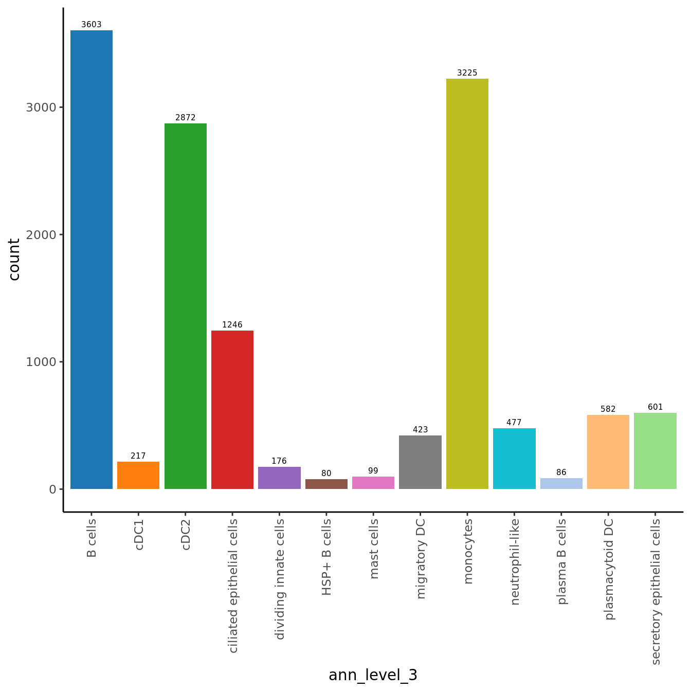
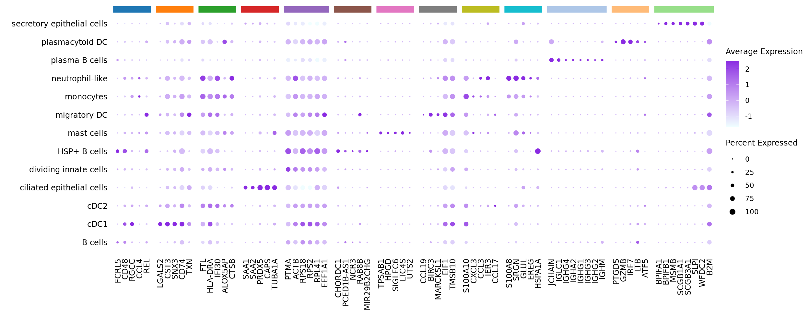
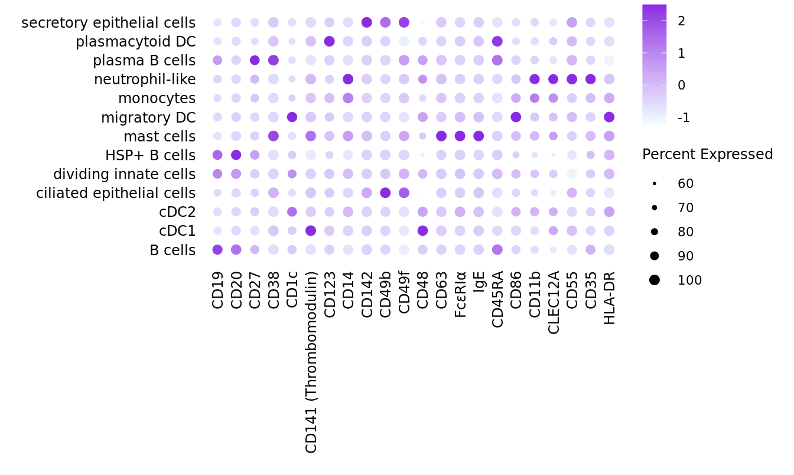

Annotate Other Cells clusters
Jovana Maksimovic
July 05, 2024
Last updated: 2024-07-05
Checks: 7 0
Knit directory: paed-inflammation-CITEseq/
This reproducible R Markdown analysis was created with workflowr (version 1.7.1). The Checks tab describes the reproducibility checks that were applied when the results were created. The Past versions tab lists the development history.
Great! Since the R Markdown file has been committed to the Git repository, you know the exact version of the code that produced these results.
Great job! The global environment was empty. Objects defined in the global environment can affect the analysis in your R Markdown file in unknown ways. For reproduciblity it’s best to always run the code in an empty environment.
The command set.seed(20240216) was run prior to running
the code in the R Markdown file. Setting a seed ensures that any results
that rely on randomness, e.g. subsampling or permutations, are
reproducible.
Great job! Recording the operating system, R version, and package versions is critical for reproducibility.
Nice! There were no cached chunks for this analysis, so you can be confident that you successfully produced the results during this run.
Great job! Using relative paths to the files within your workflowr project makes it easier to run your code on other machines.
Great! You are using Git for version control. Tracking code development and connecting the code version to the results is critical for reproducibility.
The results in this page were generated with repository version 256e8cf. See the Past versions tab to see a history of the changes made to the R Markdown and HTML files.
Note that you need to be careful to ensure that all relevant files for
the analysis have been committed to Git prior to generating the results
(you can use wflow_publish or
wflow_git_commit). workflowr only checks the R Markdown
file, but you know if there are other scripts or data files that it
depends on. Below is the status of the Git repository when the results
were generated:
Ignored files:
Ignored: .Rhistory
Ignored: .Rproj.user/
Ignored: code/voomByGroup/
Ignored: data/.DS_Store
Ignored: data/C133_Neeland/
Ignored: data/C133_Neeland_batch0/
Ignored: data/C133_Neeland_batch1/
Ignored: data/C133_Neeland_batch2/
Ignored: data/C133_Neeland_batch3/
Ignored: data/C133_Neeland_batch4/
Ignored: data/C133_Neeland_batch5/
Ignored: data/C133_Neeland_batch6/
Ignored: data/C133_Neeland_merged/
Ignored: renv/library/
Ignored: renv/staging/
Untracked files:
Untracked: analysis/13.1_DGE_analysis_macro-alveolar_cells_decontx.Rmd
Untracked: code/cellbender.sh
Untracked: code/move_files.R
Untracked: data/Proteins_T-NK_22.04.22.csv
Untracked: data/Proteins_broad_22.04.22.csv
Untracked: data/Proteins_macs_22.04.22.csv
Untracked: data/Proteins_other_22.04.22.csv
Untracked: data/cluster_annotations/seurat_markers_other_cells.rds
Untracked: data/heart10k_raw_feature_bc_matrix.h5
Untracked: data/oshlack_lab/
Untracked: data/output.log
Untracked: data/tiny_output.log
Untracked: data/tiny_raw_feature_bc_matrix.h5ad
Untracked: output/dge_analysis/
Unstaged changes:
Modified: .DS_Store
Modified: analysis/06.1_azimuth_annotation_decontx.Rmd
Modified: analysis/11.0_manual_annotations_t_cells_decontx.Rmd
Modified: code/run_cellbender.R
Modified: data/cluster_annotations/others_ambientRNAremoval_21.03.24.xlsx
Note that any generated files, e.g. HTML, png, CSS, etc., are not included in this status report because it is ok for generated content to have uncommitted changes.
These are the previous versions of the repository in which changes were
made to the R Markdown
(analysis/12.0_manual_annotations_other_cells.Rmd) and HTML
(docs/12.0_manual_annotations_other_cells.html) files. If
you’ve configured a remote Git repository (see
?wflow_git_remote), click on the hyperlinks in the table
below to view the files as they were in that past version.
| File | Version | Author | Date | Message |
|---|---|---|---|---|
| Rmd | 256e8cf | Jovana Maksimovic | 2024-07-05 | wflow_publish(c("analysis/index.Rmd", "analysis/12.0_manual_annotations_other_cells.Rmd")) |
Load libraries
Load Data
ambient <- "_decontx"
out <- here("data",
"C133_Neeland_merged",
glue("C133_Neeland_full_clean{ambient}_integrated_clustered_other_cells.ADT.SEU.rds"))
seuInt <- readRDS(file = out)
seuIntAn object of class Seurat
42055 features across 10801 samples within 6 assays
Active assay: integrated (3000 features, 2950 variable features)
5 other assays present: RNA, ADT, ADT.dsb, SCT, integrated.adt
5 dimensional reductions calculated: pca, umap, pca.adt, umap.adt, wnn.umapUpdate group labels
seuInt@meta.data %>%
data.frame %>%
mutate(Status = ifelse(str_detect(Treatment, "ivacaftor"),
"CF ivacaftor",
ifelse(str_detect(Treatment, "orkambi"),
"CF lumacaftor-ivacaftor",
ifelse(Treatment == "untreated",
"CF no-modulator",
"non-CF control"))),
Status_sub = ifelse(str_detect(Treatment, "ivacaftor"),
"CF.IVA",
ifelse(str_detect(Treatment, "orkambi"),
"CF.LUMA_IVA",
ifelse(Treatment == "untreated",
"CF.NO_MOD",
"NON_CF.CTRL"))),
Group = ifelse(!Status_sub %in% "NON_CF.CTRL",
paste(Status_sub,
toupper(substr(Severity, 1, 1)),
sep = "."),
Status_sub),
Severity = tolower(Severity),
Participant = strsplit2(sample.id, ".", fixed = TRUE)[,1]) -> seuInt@meta.dataSub-cluster labelling
Load manual annotations
labels <- read_excel(here("data",
"cluster_annotations",
"others_ambientRNAremoval_21.03.24.xlsx"),
skip = 1)
# set selected cluster resolution
grp <- "wsnn_res.0.6"
seuInt@meta.data %>%
rownames_to_column(var = "cell") %>%
left_join(labels %>%
mutate(Cluster = as.factor(Cluster),
Annotation = as.factor(Annotation),
Broad = as.factor(Broad)),
by = c("wsnn_res.0.6" = "Cluster")) %>%
column_to_rownames(var = "cell") -> seuInt@meta.data
seuInt <- subset(seuInt, cells = which(seuInt$Annotation != "unknown"))
seuInt$Annotation <- fct_drop(seuInt$Annotation)
seuInt$Broad <- fct_drop(seuInt$Broad)
seuIntAn object of class Seurat
42055 features across 10801 samples within 6 assays
Active assay: integrated (3000 features, 2950 variable features)
5 other assays present: RNA, ADT, ADT.dsb, SCT, integrated.adt
5 dimensional reductions calculated: pca, umap, pca.adt, umap.adt, wnn.umapUpdate PCA and UMAP after removing “unknown” cell clusters.
# redo PCA and UMAP
seuInt <- RunPCA(seuInt, dims = 1:30, verbose = FALSE) %>%
RunUMAP(dims = 1:30, verbose = FALSE)Visualise annotations
options(ggrepel.max.overlaps = Inf)
DimPlot(seuInt, reduction = 'umap', label = TRUE, repel = TRUE,
label.size = 3, group.by = grp) +
NoLegend() -> p1
cluster_pal <- "ggsci::category20_d3"
DimPlot(seuInt, reduction = 'umap', label = FALSE, group.by = "Annotation") +
scale_color_paletteer_d(cluster_pal) +
theme(text = element_text(size = 9),
axis.text = element_blank(),
axis.ticks = element_blank()) +
NoLegend() -> p2
p1
LabelClusters(p2, id = "Annotation", repel = TRUE,
size = 2.5, box = TRUE, fontfamily = "arial")
No. cells per cluster
seuInt@meta.data %>%
ggplot(aes(x = Annotation, fill = Annotation)) +
geom_bar() +
geom_text(aes(label = after_stat(count)), stat = "count",
vjust = -0.5, colour = "black", size = 2) +
theme_classic() +
theme(axis.text.x = element_text(angle = 90, vjust = 0.5, hjust = 1)) +
NoLegend() +
scale_fill_paletteer_d(cluster_pal)
seuInt@meta.data %>%
count(Annotation) %>%
mutate(perc = round(n/sum(n)*100, 1)) %>%
dplyr::rename(`Cell Label` = "Annotation",
`No. Cells` = n,
`% Cells` = perc) %>%
knitr::kable()| Cell Label | No. Cells | % Cells |
|---|---|---|
| B cells | 2511 | 23.2 |
| cDC1 | 163 | 1.5 |
| cDC2 | 2127 | 19.7 |
| ciliated epithelial cells | 1123 | 10.4 |
| dividing innate cells | 128 | 1.2 |
| HSP+ B cells | 80 | 0.7 |
| mast cells | 99 | 0.9 |
| migratory DC | 305 | 2.8 |
| monocytes | 2877 | 26.6 |
| neutrophil-like | 427 | 4.0 |
| plasma B cells | 59 | 0.5 |
| plasmacytoid DC | 519 | 4.8 |
| secretory epithelial cells | 383 | 3.5 |
RNA marker gene analysis
Adapted from Dr. Belinda Phipson’s work for [@Sim2021-cg].
Test for marker genes using limma
# limma-trend for DE
Idents(seuInt) <- "Annotation"
out <- here("data",
"C133_Neeland_merged",
glue("C133_Neeland_full_clean{ambient}_other_cells_logcounts.SEU.rds"))
if(!file.exists(out)){
logcounts <- normCounts(DGEList(as.matrix(seuInt[["RNA"]]@counts)),
log = TRUE, prior.count = 0.5)
entrez <- AnnotationDbi::mapIds(org.Hs.eg.db,
keys = rownames(logcounts),
column = c("ENTREZID"),
keytype = "SYMBOL",
multiVals = "first")
# remove genes without entrez IDs as these are difficult to interpret biologically
logcounts <- logcounts[!is.na(entrez),]
saveRDS(logcounts, file = out)
} else {
logcounts <- readRDS(out)
}
maxclust <- length(levels(Idents(seuInt))) - 1
clustgrp <- seuInt$Annotation
clustgrp <- factor(clustgrp)
donor <- factor(seuInt$sample.id)
batch <- factor(seuInt$Batch)
design <- model.matrix(~ 0 + clustgrp + donor)
colnames(design)[1:(length(levels(clustgrp)))] <- levels(clustgrp)
# Create contrast matrix
mycont <- matrix(NA, ncol = length(levels(clustgrp)),
nrow = length(levels(clustgrp)))
rownames(mycont) <- colnames(mycont) <- levels(clustgrp)
diag(mycont) <- 1
mycont[upper.tri(mycont)] <- -1/(length(levels(factor(clustgrp))) - 1)
mycont[lower.tri(mycont)] <- -1/(length(levels(factor(clustgrp))) - 1)
# Fill out remaining rows with 0s
zero.rows <- matrix(0, ncol = length(levels(clustgrp)),
nrow = (ncol(design) - length(levels(clustgrp))))
fullcont <- rbind(mycont, zero.rows)
rownames(fullcont) <- colnames(design)
fit <- lmFit(logcounts, design)
fit.cont <- contrasts.fit(fit, contrasts = fullcont)
fit.cont <- eBayes(fit.cont, trend = TRUE, robust = TRUE)
summary(decideTests(fit.cont)) B cells cDC1 cDC2 ciliated epithelial cells dividing innate cells
Down 6024 2047 6003 2517 411
NotSig 7912 13078 7970 5263 12971
Up 1874 685 1837 8030 2428
HSP+ B cells mast cells migratory DC monocytes neutrophil-like
Down 751 1794 5028 6495 5858
NotSig 14382 12356 9744 7474 8801
Up 677 1660 1038 1841 1151
plasma B cells plasmacytoid DC secretory epithelial cells
Down 590 2826 1696
NotSig 14762 9798 9418
Up 458 3186 4696Test relative to a threshold (TREAT).
tr <- treat(fit.cont, lfc = 0.5)
dt <- decideTests(tr)
summary(dt) B cells cDC1 cDC2 ciliated epithelial cells dividing innate cells
Down 64 11 7 172 5
NotSig 15660 15677 15682 14970 15714
Up 86 122 121 668 91
HSP+ B cells mast cells migratory DC monocytes neutrophil-like
Down 22 164 11 8 15
NotSig 15717 15609 15655 15651 15665
Up 71 37 144 151 130
plasma B cells plasmacytoid DC secretory epithelial cells
Down 75 40 141
NotSig 15680 15637 15486
Up 55 133 183Mean-difference (MD) plots per cluster.
par(mfrow=c(4,3))
par(mar=c(2,3,1,2))
for(i in 1:ncol(mycont)){
plotMD(tr, coef = i, status = dt[,i], hl.cex = 0.5)
abline(h = 0, col = "lightgrey")
lines(lowess(tr$Amean, tr$coefficients[,i]), lwd = 1.5, col = 4)
}

limma marker gene dotplot
DefaultAssay(seuInt) <- "RNA"
contnames <- colnames(mycont)
top_markers <- NULL
n_markers <- 5
for(i in 1:ncol(mycont)){
top <- topTreat(tr, coef = i, n = Inf)
top <- top[top$logFC > 0, ]
top_markers <- c(top_markers,
setNames(rownames(top)[1:n_markers],
rep(contnames[i], n_markers)))
}
top_markers <- top_markers[!is.na(top_markers)]
d <- duplicated(top_markers)
top_markers <- top_markers[!d]
geneCols <- paletteer_d(cluster_pal)[factor(names(top_markers))]
strip <- strip_themed(background_x = elem_list_rect(fill = unique(geneCols)))
DotPlot(seuInt,
features = unname(top_markers),
group.by = "Annotation",
cols = c("azure1", "blueviolet"),
dot.scale = 2.5,
assay = "SCT") +
FontSize(x.text = 9, y.text = 9) +
labs(y = element_blank(), x = element_blank()) +
facet_grid2(~names(top_markers),
scales = "free_x",
space = "free_x",
strip = strip) +
theme(axis.text.x = element_text(angle = 90,
hjust = 1,
vjust = 0.5),
legend.text = element_text(size = 8),
legend.title = element_text(size = 9),
strip.text = element_text(size = 0),
text = element_text(family = "arial"),
axis.ticks = element_blank(),
axis.line = element_blank(),
panel.spacing = unit(2, "mm")) 
Test for marker genes using Seurat
DefaultAssay(seuInt) <- "RNA"
Idents(seuInt) <- "Annotation"
out <- here("data/cluster_annotations/seurat_markers_other_cells.rds")
if(!file.exists(out)){
# restrict genes to same set as for limma analysis
markers <- FindAllMarkers(seuInt, only.pos = TRUE,
features = rownames(logcounts))
saveRDS(markers, file = out)
} else {
markers <- readRDS(out)
}
head(markers) %>% knitr::kable()| p_val | avg_log2FC | pct.1 | pct.2 | p_val_adj | cluster | gene | |
|---|---|---|---|---|---|---|---|
| MS4A1 | 0 | 2.0898859 | 0.865 | 0.018 | 0 | B cells | MS4A1 |
| CD52 | 0 | 1.1950683 | 0.842 | 0.364 | 0 | B cells | CD52 |
| CD79A | 0 | 1.1886101 | 0.575 | 0.022 | 0 | B cells | CD79A |
| LTB | 0 | 1.1104234 | 0.548 | 0.127 | 0 | B cells | LTB |
| IGHM | 0 | 0.9864198 | 0.515 | 0.031 | 0 | B cells | IGHM |
| BANK1 | 0 | 0.9577398 | 0.551 | 0.043 | 0 | B cells | BANK1 |
Seurat marker gene dotplot
DefaultAssay(seuInt) <- "RNA"
maxGenes <- 5
markers %>%
group_by(cluster) %>%
top_n(n = maxGenes, wt = avg_log2FC) -> top5
sig <- top5$gene
d <- duplicated(sig)
geneCols <- paletteer_d(cluster_pal)[top5$cluster][!d]
strip <- strip_themed(background_x = elem_list_rect(fill = unique(geneCols)))
DotPlot(seuInt,
features = sig[!d],
group.by = "Annotation",
cols = c("azure1", "blueviolet"),
dot.scale = 2.5,
assay = "SCT") +
FontSize(x.text = 9, y.text = 9) +
labs(y = element_blank(), x = element_blank()) +
facet_grid2(~top5$cluster[!d],
scales = "free_x",
space = "free_x",
strip = strip) +
theme(axis.text.x = element_text(angle = 90,
hjust = 1,
vjust = 0.5),
legend.text = element_text(size = 8),
legend.title = element_text(size = 9),
strip.text = element_text(size = 0),
text = element_text(family = "arial"),
axis.ticks = element_blank(),
axis.line = element_blank(),
panel.spacing = unit(2, "mm")) 
Visualise ADTs
Make data frame of proteins, clusters, expression levels.
out <- here("data",
"C133_Neeland_merged",
glue("C133_Neeland_full_clean{ambient}_other_cells_adt_dsb.SEU.rds"))
if(!file.exists(out)){
read_csv(file = here("data",
"C133_Neeland_batch1",
"data",
"sample_sheets",
"ADT_features.csv")) -> adt_data
pattern <- "anti-human/mouse |anti-human/mouse/rat |anti-mouse/human |anti-human "
adt_data$name <- gsub(pattern, "", adt_data$name)
adt <- seuInt[["ADT"]]@counts
if(all(rownames(seuInt[["ADT"]]@counts) == adt_data$id)) rownames(adt) <- adt_data$name
adt_data %>%
dplyr::filter(grepl("[Ii]sotype", name)) %>%
pull(name) -> isotype_controls
# normalise ADT using DSB normalisation
adt_dsb <- ModelNegativeADTnorm(cell_protein_matrix = adt,
denoise.counts = TRUE,
use.isotype.control = TRUE,
isotype.control.name.vec = isotype_controls)
saveRDS(adt_dsb, file = out)
} else {
adt_dsb <- readRDS(out)
}
seuInt[["ADT.dsb"]] <- NULL
m <- match(colnames(seuInt), colnames(adt_dsb)) # remove cells not present in Seurat obj
seuInt[["ADT.dsb"]] <- CreateAssayObject(data = adt_dsb[,m])ADTs <- read_csv(file = here("data",
"Proteins_other_22.04.22.csv"))
pattern <- "anti-human/mouse |anti-human/mouse/rat |anti-mouse/human |anti-human "
ADTs$Description <- gsub(pattern, "", ADTs$Description)
DotPlot(seuInt,
features = ADTs$Description,
group.by = "Annotation",
cols = c("azure1", "blueviolet"),
dot.scale = 2.5,
assay = "ADT.dsb") +
FontSize(x.text = 9, y.text = 9) +
labs(y = element_blank(), x = element_blank()) +
theme(axis.text.x = element_text(angle = 90,
hjust = 1,
vjust = 0.5),
legend.text = element_text(size = 8),
legend.title = element_text(size = 9),
strip.text = element_text(size = 0),
text = element_text(family = "arial"),
axis.ticks = element_blank(),
axis.line = element_blank(),
panel.spacing = unit(2, "mm")) 
Save data
out <- here("data",
"C133_Neeland_merged",
glue("C133_Neeland_full_clean{ambient}_other_cells_annotated_diet.SEU.rds"))
if(!file.exists(out)){
DefaultAssay(seuInt) <- "RNA"
saveRDS(DietSeurat(seuInt, assays = "RNA"), out)
}
out <- here("data",
"C133_Neeland_merged",
glue("C133_Neeland_full_clean{ambient}_other_cells_annotated_full.SEU.rds"))
if(!file.exists(out)){
DefaultAssay(seuInt) <- "RNA"
saveRDS(seuInt, out)
}Session info
sessionInfo()R version 4.3.2 (2023-10-31)
Platform: aarch64-apple-darwin20 (64-bit)
Running under: macOS Sonoma 14.5
Matrix products: default
BLAS: /Library/Frameworks/R.framework/Versions/4.3-arm64/Resources/lib/libRblas.0.dylib
LAPACK: /Library/Frameworks/R.framework/Versions/4.3-arm64/Resources/lib/libRlapack.dylib; LAPACK version 3.11.0
locale:
[1] en_US.UTF-8/en_US.UTF-8/en_US.UTF-8/C/en_US.UTF-8/en_US.UTF-8
time zone: Australia/Melbourne
tzcode source: internal
attached base packages:
[1] stats4 stats graphics grDevices datasets utils methods
[8] base
other attached packages:
[1] dsb_1.0.3 ggh4x_0.2.8
[3] speckle_1.2.0 org.Hs.eg.db_3.18.0
[5] AnnotationDbi_1.64.1 readxl_1.4.3
[7] tidyHeatmap_1.8.1 paletteer_1.6.0
[9] patchwork_1.2.0 glue_1.7.0
[11] here_1.0.1 dittoSeq_1.14.2
[13] SeuratObject_4.1.4 Seurat_4.4.0
[15] lubridate_1.9.3 forcats_1.0.0
[17] stringr_1.5.1 dplyr_1.1.4
[19] purrr_1.0.2 readr_2.1.5
[21] tidyr_1.3.1 tibble_3.2.1
[23] ggplot2_3.5.0 tidyverse_2.0.0
[25] edgeR_4.0.15 limma_3.58.1
[27] SingleCellExperiment_1.24.0 SummarizedExperiment_1.32.0
[29] Biobase_2.62.0 GenomicRanges_1.54.1
[31] GenomeInfoDb_1.38.6 IRanges_2.36.0
[33] S4Vectors_0.40.2 BiocGenerics_0.48.1
[35] MatrixGenerics_1.14.0 matrixStats_1.2.0
[37] workflowr_1.7.1
loaded via a namespace (and not attached):
[1] RcppAnnoy_0.0.22 splines_4.3.2 later_1.3.2
[4] prismatic_1.1.1 bitops_1.0-7 cellranger_1.1.0
[7] polyclip_1.10-6 lifecycle_1.0.4 doParallel_1.0.17
[10] rprojroot_2.0.4 vroom_1.6.5 globals_0.16.2
[13] processx_3.8.3 lattice_0.22-6 MASS_7.3-60.0.1
[16] dendextend_1.17.1 magrittr_2.0.3 plotly_4.10.4
[19] sass_0.4.8 rmarkdown_2.25 jquerylib_0.1.4
[22] yaml_2.3.8 httpuv_1.6.14 sctransform_0.4.1
[25] sp_2.1-3 spatstat.sparse_3.0-3 reticulate_1.35.0
[28] DBI_1.2.1 cowplot_1.1.3 pbapply_1.7-2
[31] RColorBrewer_1.1-3 abind_1.4-5 zlibbioc_1.48.0
[34] Rtsne_0.17 RCurl_1.98-1.14 git2r_0.33.0
[37] circlize_0.4.15 GenomeInfoDbData_1.2.11 ggrepel_0.9.5
[40] irlba_2.3.5.1 listenv_0.9.1 spatstat.utils_3.0-4
[43] pheatmap_1.0.12 goftest_1.2-3 spatstat.random_3.2-2
[46] fitdistrplus_1.1-11 parallelly_1.37.0 leiden_0.4.3.1
[49] codetools_0.2-20 DelayedArray_0.28.0 shape_1.4.6
[52] tidyselect_1.2.0 farver_2.1.1 viridis_0.6.5
[55] spatstat.explore_3.2-6 jsonlite_1.8.8 GetoptLong_1.0.5
[58] ellipsis_0.3.2 progressr_0.14.0 iterators_1.0.14
[61] ggridges_0.5.6 survival_3.5-8 foreach_1.5.2
[64] tools_4.3.2 ica_1.0-3 Rcpp_1.0.12
[67] gridExtra_2.3 SparseArray_1.2.4 xfun_0.42
[70] withr_3.0.0 BiocManager_1.30.22 fastmap_1.1.1
[73] fansi_1.0.6 callr_3.7.3 digest_0.6.34
[76] timechange_0.3.0 R6_2.5.1 mime_0.12
[79] colorspace_2.1-0 scattermore_1.2 tensor_1.5
[82] RSQLite_2.3.5 spatstat.data_3.0-4 utf8_1.2.4
[85] generics_0.1.3 renv_1.0.3 data.table_1.15.0
[88] httr_1.4.7 htmlwidgets_1.6.4 S4Arrays_1.2.0
[91] whisker_0.4.1 uwot_0.1.16 pkgconfig_2.0.3
[94] gtable_0.3.4 blob_1.2.4 ComplexHeatmap_2.18.0
[97] lmtest_0.9-40 XVector_0.42.0 htmltools_0.5.7
[100] clue_0.3-65 scales_1.3.0 png_0.1-8
[103] knitr_1.45 rstudioapi_0.15.0 rjson_0.2.21
[106] tzdb_0.4.0 reshape2_1.4.4 nlme_3.1-164
[109] GlobalOptions_0.1.2 cachem_1.0.8 zoo_1.8-12
[112] KernSmooth_2.23-22 parallel_4.3.2 miniUI_0.1.1.1
[115] pillar_1.9.0 grid_4.3.2 vctrs_0.6.5
[118] RANN_2.6.1 promises_1.2.1 xtable_1.8-4
[121] cluster_2.1.6 evaluate_0.23 cli_3.6.2
[124] locfit_1.5-9.8 compiler_4.3.2 rlang_1.1.3
[127] crayon_1.5.2 future.apply_1.11.1 labeling_0.4.3
[130] mclust_6.1 rematch2_2.1.2 ps_1.7.6
[133] getPass_0.2-4 plyr_1.8.9 fs_1.6.3
[136] stringi_1.8.3 viridisLite_0.4.2 deldir_2.0-2
[139] Biostrings_2.70.2 munsell_0.5.0 lazyeval_0.2.2
[142] spatstat.geom_3.2-8 Matrix_1.6-5 hms_1.1.3
[145] bit64_4.0.5 future_1.33.1 KEGGREST_1.42.0
[148] statmod_1.5.0 shiny_1.8.0 highr_0.10
[151] ROCR_1.0-11 memoise_2.0.1 igraph_2.0.1.1
[154] bslib_0.6.1 bit_4.0.5